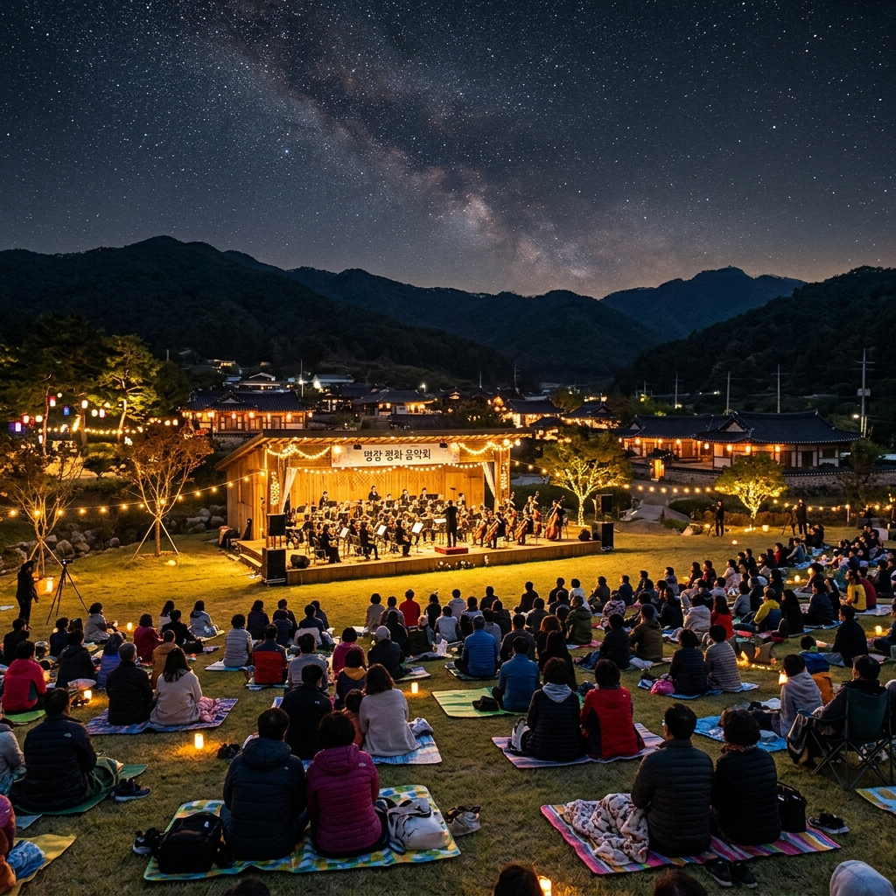
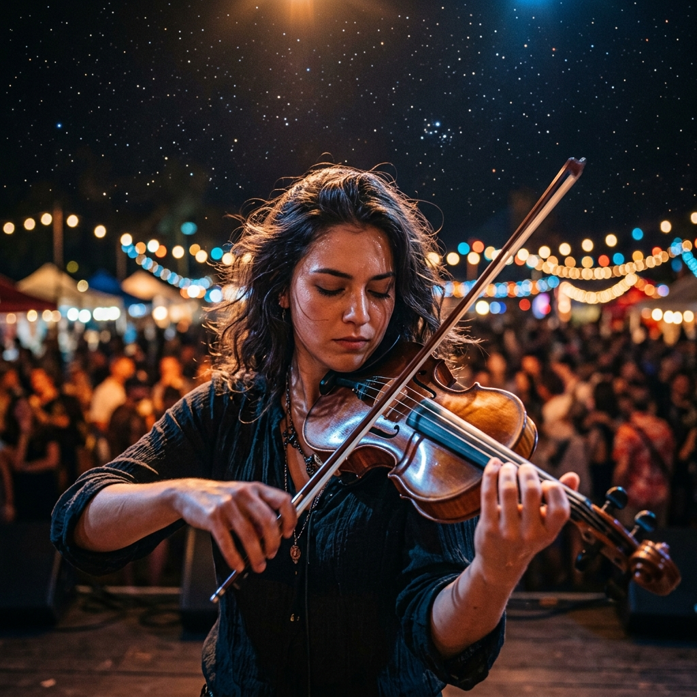
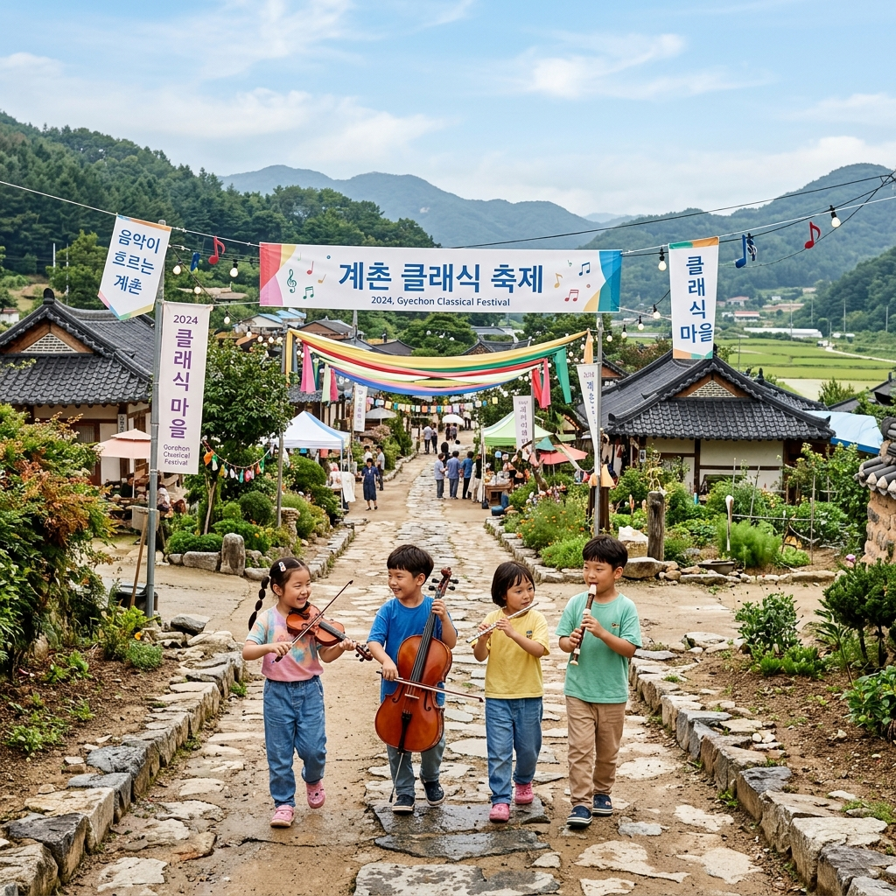

2026 평창 계촌 클래식 축제: 별빛 아래 울려 퍼지는 선율의 향연
강원도 평창의 고즈넉한 산골 마을 계촌리에서 매년 5월이면 기적 같은 음악회가 열립니다. 도심의 화려한 공연장을 떠나 푸른 잔디와 쏟아지는 별빛을 무대 삼아 펼쳐지는 제12회 계촌 클래식 축제인데요. 전 세계적인 클래식 아티스트들이 이 작은 마을을 찾는 이유와 함께, 2026년 축제를 더욱 풍성하게 즐길 수 있는 필수 관람 팁을 에디터가 정밀 분석해 드립니다.
1. 계촌 클래식 축제의 탄생과 의미: 음악으로 살아난 마을
계촌 클래식 축제는 단순한 일회성 행사가 아닙니다. 전교생이 오케스트라 단원인 계촌초등학교 아이들의 꿈에서 시작된 이 축제는, 이제 대한민국을 대표하는 야외 클래식 축제로 성장했는데요. 마을 주민들이 직접 기획하고 참여하며 만들어가는 이 과정은 그 자체로 한 편의 감동적인 드라마와 같습니다.
해발 700m의 청정 고원 지대에서 울려 퍼지는 클래식 선율은 공기부터 다르게 느껴집니다. 인위적인 소음이 차단된 자연 속에서 오직 악기의 울림에 집중할 수 있다는 것이 이곳만의 독보적인 가치입니다. 음악을 통해 마을 전체가 하나의 거대한 공연장으로 변신하는 마법 같은 순간을 직접 경험해 보세요.

밤하늘의 별빛과 오케스트라의 선율이 하나가 되는 야외 음악회 / AI 제작 이미지
2. 2026년 축제 일정 및 주요 라인업 미리보기
올해 축제는 2026년 5월 말(상세 일정 홈페이지 확인) 평창군 방림면 계촌마을 일원에서 개최됩니다. 매년 세계적인 피아니스트와 오케스트라가 참여하는 만큼 올해의 라인업 역시 클래식 애호가들의 기대를 한몸에 받고 있는데요. 정통 클래식부터 대중적인 크로스오버까지 전 세대를 아우르는 프로그램이 준비되어 있습니다.
특히 메인 공연인 '별빛 콘서트'는 예약 전쟁이 치열할 정도로 인기가 높습니다. 사전 예약을 놓치셨더라도 마을 곳곳에서 열리는 소규모 버스킹과 거리 공연은 누구나 자유롭게 감상할 수 있으니 실망하지 마세요. 계촌리의 골목길을 걷다 보면 어디선가 들려오는 우아한 선율이 여러분의 발길을 멈추게 할 것입니다.
3. 야외 공연 100% 즐기기: 준비물 및 매너 가이드
야외에서 진행되는 클래식 공연인 만큼 개인 돗자리와 가벼운 담요는 필수입니다. 강원도의 5월 밤은 생각보다 쌀쌀하므로 얇은 겉옷을 여러 겹 겹쳐 입으시는 것이 좋습니다. 또한, 산골 마을이라 벌레가 있을 수 있으니 휴대용 기피제를 준비하시면 더욱 쾌적한 관람이 가능합니다.
클래식 공연의 품격을 위해 연주 중에는 이동을 삼가고 휴대폰은 무음 모드로 설정하는 배려가 필요합니다. 하지만 이곳은 격식을 차리는 딱딱한 공연장이 아닙니다. 아이들이 잔디 위를 뛰어놀고 가족들이 오손도손 모여 앉아 편안하게 음악을 즐기는 것이 계촌 클래식 축제만의 진짜 매력입니다.

자연을 배경으로 펼쳐지는 아티스트의 수준 높은 연주 / AI 제작 이미지
4. 계촌마을 투어: 골목길마다 숨은 음악적 감성
공연 전후로 계촌마을을 천천히 둘러보세요. 담벼락마다 그려진 클래식 벽화와 음표 모양의 조형물들이 마을의 정체성을 잘 보여줍니다. 마을 입구의 작은 카페에서는 지역 주민들이 직접 구운 빵과 향긋한 커피를 즐기며 여유를 만끽할 수 있습니다.
특히 계촌초등학교 운동장은 이 축제의 발상지인 만큼 꼭 한번 들러보시길 추천합니다. 아이들이 연습하던 소박한 음악실과 푸른 잔디밭은 보는 것만으로도 마음이 따뜻해집니다. 마을 전체가 음악이라는 공통된 언어로 소통하고 있는 풍경은 방문객들에게 깊은 울림을 선사합니다.
5. 주차 정보 및 셔틀버스 운행 안내
축제 기간 계촌마을 내부는 차량 통행이 제한되거나 매우 혼잡합니다. 마을 외곽에 마련된 대형 임시 주차장에 주차하신 후, 수시로 운행되는 셔틀버스를 이용하시는 것이 가장 편리합니다. 셔틀버스는 주차장과 메인 공연장을 10~15분 간격으로 연결합니다.
내비게이션에 '계촌 클래식 축제 주차장'을 검색하여 안내 요원의 지시를 따라주세요. 주차장에서 공연장까지 걸어가는 길도 경치가 아름다워 가벼운 산책으로 제격입니다. 대중교통 이용 시 평창역이나 KTX 진부역에서 운행되는 축제 전용 셔틀 노선도 확인해 보세요.
6. 평창의 맛: 계촌에서 맛보는 정겨운 로컬 미식
계촌에 왔다면 평창의 특산물인 감자전과 옥수수 막걸리는 꼭 맛봐야 할 별미입니다. 축제장 한편에 마련된 먹거리 장터에서는 마을 부녀회에서 직접 만든 건강한 시골 음식을 합리적인 가격에 제공합니다.
담백하고 고소한 감자 옹심이와 산나물이 듬뿍 들어간 보리밥도 추천 메뉴입니다. 화려한 외식 메뉴는 아니지만, 평창의 맑은 물과 흙이 키워낸 재료 본연의 맛은 그 어떤 성찬보다 깊은 감동을 줍니다. 음악과 함께 즐기는 로컬 미식은 여행의 풍미를 더해줄 것입니다.

평창의 자연과 음악이 어우러진 평화로운 시골 마을 / AI 제작 이미지
7. 연계 관광 추천: 대관령 양떼목장과 월정사 전나무숲길
계촌 클래식 축제와 함께 둘러보기 좋은 평창의 명소로는 대관령 양떼목장이 있습니다. 이국적인 초원 풍경 속에서 귀여운 양들에게 건초를 주는 체험은 가족 단위 방문객들에게 최고의 인기 코스입니다.
또한, 오대산 월정사 전나무숲길은 웅장한 나무들이 뿜어내는 피톤치드를 마시며 힐링하기에 최적입니다. 평창의 자연이 주는 평온함을 온몸으로 느끼고 난 후 저녁의 클래식 공연을 관람하신다면, 그 시너지 효과는 배가 될 것입니다. 평창은 사계절이 모두 아름답지만, 5월의 신록은 유독 눈부십니다.
8. 숙소 예약 팁: 평창에서의 오붓한 하룻밤
별빛 콘서트가 밤늦게 끝나므로 가급적 계촌마을 인근이나 평창 시내에 숙소를 미리 예약하시는 것을 추천드립니다. 마을 내 민박은 정겨운 시골 정취를 느끼기에 좋고, 인근의 펜션이나 리조트는 좀 더 쾌적한 시설을 제공합니다.
축제 기간에는 숙소 예약이 일찍 마감되므로 최소 한 달 전에는 계획을 세우시는 것이 좋습니다. 공연이 끝난 후 숙소로 돌아와 평창의 맑은 공기를 마시며 밤하늘의 별을 보는 시간은 바쁜 도시 생활에서 얻지 못하는 귀한 선물이 될 것입니다.
9. 에디터가 전하는 마지막 여행 조언
평창 계촌 클래식 축제는 단순히 음악을 듣는 자리가 아니라, 자연과 사람, 그리고 예술이 어떻게 어우러질 수 있는지를 몸소 체험하는 공감의 장입니다. 거창한 지식이 없어도 상관없습니다. 그저 들려오는 선율에 몸을 맡기고 흐르는 별빛을 바라보는 것만으로도 충분합니다.
이번 5월, 답답한 일상을 벗어나 평창 계촌마을로 떠나보시는 건 어떨까요? 작은 시골 마을이 선사하는 거대한 감동이 여러분의 지친 마음을 따뜻하게 안아줄 것입니다. 음악이 흐르는 평창에서 잊지 못할 5월의 밤을 만들어보세요.
#계촌클래식축제
#평창가볼만한곳
#5월축제
#강원도여행
#야외클래식공연
#계촌마을
#별빛콘서트
#가족나들이추천
#평창맛집
#힐링여행추천